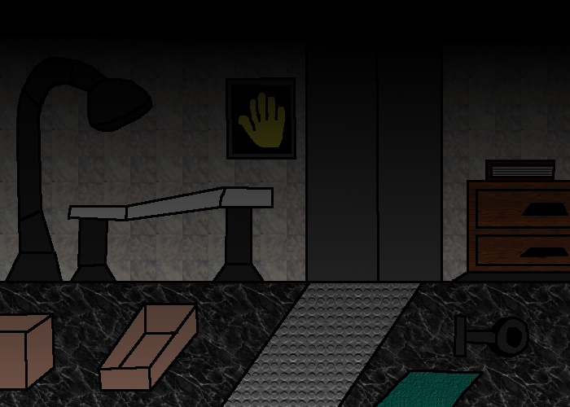

To begin with, I was skeptic about uploading a game project under the genre of the official. However, after seeing that others had made similar genre games and had uploaded them onto github, this means that there is no need to worry.
I don't consider this as a horror game, but rather a detective story game. That approach I have been following while watching the gameplay videos about the previous official chapters on YouTube.
This 2D fangame is a concept, dedicated to Motyagames, Sheeprampage, BuggyWuggy, Internet Inferno, ThinkNoodles, PoppyTheory and Doggyandi. While you might recognize references to other games, and the lore would sound a bit difficult to analyze, be aware: this game is still not for the fainty heart! Play at your own risk!
The characters and everything else related to Poppy Playtime belong to MOB Entertainment. Original yellow hand concept by Motyagames (as well as I do remember). Further credits in the credits roll after finishing the game!
Side note: The tools and sounds are not 100% identical compared to the ones in the official chapters, still worth to give a try to play this game.
IMPORTANT: This game is really different from the official
chapter 5! I started creating this fangame in May 2025, and
that time we did not know even the names of the characters!
Therefore, this chapter 5 fangame is kinda independent
from the offical one! I wanted to create something cool,
which has keyboard event handling, and imitates many
things from the official games in Javascript environment.
Thank you for your understanding and patience!